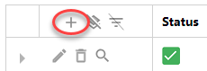

You may not be able to perform all features described below. This depends on the role that has been assigned to you.
Instructions
-
Navigate to the start page, the home page of the Add-on.
Tip: Make this link your favorite, if this has not been done already.- When there are several archives online, select the correct archive first.

- When there are several archives online, select the correct archive first.
- The Records Overview page appears.
Via this page you can register and upload documents. - Start a registration plus upload:
 - Select the correct record type (for example Contract) and an archiving method (web upload or scan), add the correct documents and click Register.
Attention: When you archive/upload from Outlook or chosen documents, the dialog (step 5) will start immediately. - Define, in the dialog that appears, the fields (metadata), like department, file, lawyer (these fields depend on the chosen record type). Click Register.
- After registration of the new document, it will be made searchable by ZyLAB ONE. After that, the document can be found and is searchable.